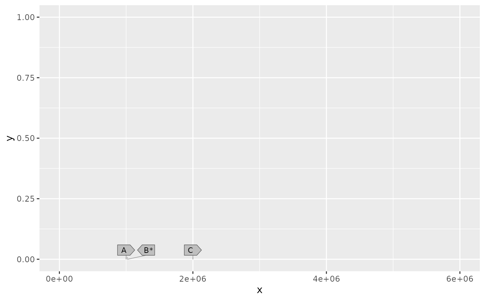

Draw labelled gene arrows on stems at true genomic positions
Source:R/geom-gene-lollipop.R
geom_gene_lollipop.RdFixed-size arrow heads make selected genes readable over large genomic ranges. Their stems retain the mapped genomic positions. Heads are packed above a shared baseline, in genomic order, using physical millimetres.
Usage
geom_gene_lollipop(
mapping = NULL,
data = NULL,
stat = "identity",
position = "identity",
...,
headroom = 1,
head_width_mm = NULL,
head_height_mm = 4,
padding_mm = 0.6,
tip_mm = 1.8,
gap_mm = 0.8,
row_gap_mm = 0.8,
stem_height_mm = 1.5,
max_shift_mm = 25,
max_rows = Inf,
head_layout = c("compact", "columns"),
anchor_tick_mm = 0.9,
fan_height_mm = 2.5,
lane_spacing_mm = 0.65,
lane_clearance_mm = 0.5,
stem_linewidth = 0.22,
stem_halo_mm = 0.12,
stem_halo_colour = "white",
layout_callback = NULL,
species = NULL,
chr = NULL,
subset = NULL,
na.rm = FALSE,
show.legend = NA,
inherit.aes = FALSE
)
GeomGeneLollipopArguments
- mapping, data, stat, position, ..., na.rm, show.legend, inherit.aes
Standard ggplot2 layer arguments. Map
x,y,strandand optionallylabel. Columns namedx,y, andstrandare mapped automatically.- headroom
Positive y-data-unit space reserved above the baseline.
- head_width_mm
Common physical head width.
NULLfits the longest label across the entire layer without shrinking text.- head_height_mm
Minimum head height in millimetres; grows to fit text.
- padding_mm
Padding around internal labels in millimetres.
- tip_mm
Length of the triangular arrow tip in millimetres.
- gap_mm
Horizontal clearance between heads in the same row.
- row_gap_mm
Vertical clearance between rows of heads.
- stem_height_mm
Clearance from the baseline to the first head row.
- max_shift_mm
Maximum horizontal displacement from a true anchor.
- max_rows
Maximum number of head rows, or
Inf.- head_layout
"compact"retains ordered centres with interleaved rows."columns"groups consecutive genes into columns read top to bottom, then left to right, and routes leaders beside the heads.- anchor_tick_mm
Height of exact-position vertical anchor ticks.
- fan_height_mm
Height of the clear routing band above the ticks in column mode.
stem_height_mmseparates this band from the lowest heads.- lane_spacing_mm
Distance between leader lanes in each column gutter.
- lane_clearance_mm
Clearance beside gutter lanes and head outlines.
- stem_linewidth
Width of coloured leaders in millimetres. Their colour defaults to a darker shade of the head fill; map or set
stem_colourto override it. Anchor ticks use at most 0.16 mm linewidth.- stem_halo_mm
Extra halo width on each side of a leader, drawn beneath all coloured leaders.
- stem_halo_colour
Halo colour; defaults to white.
- layout_callback
Optional function receiving a data frame of physical head and anchor coordinates at draw time, once per panel per draw. Units are millimetres relative to the panel's lower left corner.
genomic_xretains the original untransformed genomic coordinate.- species, chr, subset
Optional Syn individual, chromosome and genomic window selectors.
Details
Use one shared y baseline per panel. The common width includes arrow-tip
space so labels fit inside the arrow body. Missing labels remain unlabelled
heads. Unknown strands produce rectangular heads. Reversing the x scale or
coordinate reverses the arrows. Only linear Cartesian coordinates are
supported. Heads outside a coordinate zoom are omitted with their anchors.
Heads are stylised gene symbols, not scaled transcript structures. For
Syn-backed input the anchor is the midpoint of the complete gene span,
including genes without coding transcripts. Retain native-scale context
genes in a separate geom_gene() layer if needed.
Compact packing uses the smallest feasible number of round-robin rows with ordered
head centres and bounded displacement. Automatic column packing uses the smallest
feasible number of rows with one common x centre per group of consecutive
genes. Read each column top to bottom, then the next column to its right.
Map optional numeric head_row to keep matching genes in shared rows across
facets. Rows are positive integers numbered bottom to top. Supply a row for
every gene in the layer, and use head_layout = "columns". Fixed-row packing
finds the smallest feasible number of ordered, contiguous columns while
retaining every supplied row index. Unused slots stay
blank; duplicated genes remain separate heads. Shared rows are supplied
layout metadata, not inferred orthology or evidence of gene absence.
Leaders run through a clear band and ordered lanes to each head's left edge, avoiding the other heads. Both layouts are recomputed on the output device. If every head cannot fit the available width or headroom, drawing errors instead of dropping genes or reducing font size. Increase the output size, headroom or displacement allowance to resolve the error.
Examples
genes <- data.frame(x = c(1e6, 1.02e6, 2e6), y = 0,
strand = c("+", "-", "+"), label = c("A", "B*", "C"))
ggplot2::ggplot() + geom_gene_lollipop(data = genes) +
ggplot2::scale_x_continuous(limits = c(0, 6e6))
